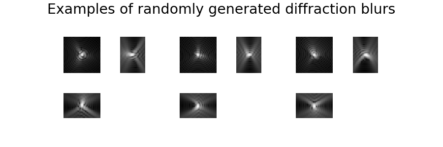
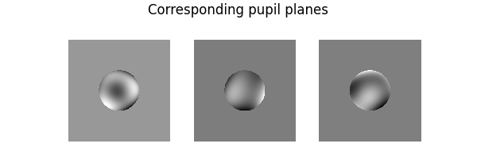
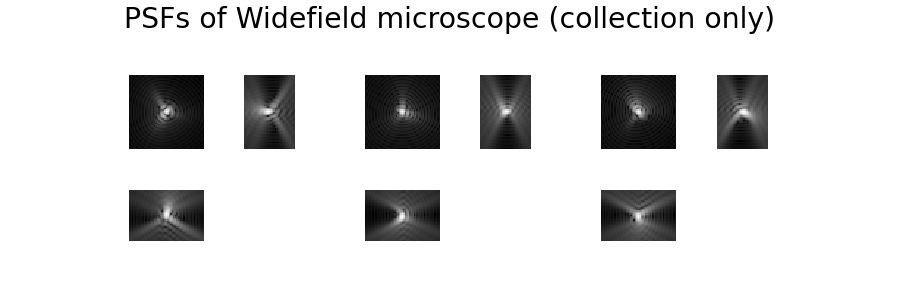

Note
Go to the end to download the full example code.
3D diffraction PSF
This example provides a tour of 3D blur operators in the library. In particular, we show how to use Diffraction Blurs (Fresnel diffraction) to simulate fluorescence microscopes.
import torch
import deepinv as dinv
from deepinv.utils.plotting import plot, plot_ortho3D
from deepinv.utils.demo import load_np_url
import matplotlib.pyplot as plt
import numpy as np
import imageio.v2 as io
# First, let's load some test images.
dtype = torch.float32
device = dinv.utils.get_freer_gpu() if torch.cuda.is_available() else "cpu"
# Next, set the global random seed from pytorch to ensure reproducibility of the example.
torch.manual_seed(0)
torch.cuda.manual_seed(0)
volume_data = load_np_url(
"https://huggingface.co/datasets/deepinv/images/resolve/main/brainweb_t1_ICBM_1mm_subject_0.npy?download=true"
)
volume_data = np.copy(volume_data[::-1, ...])
volume_data = torch.from_numpy(volume_data).unsqueeze(0).unsqueeze(0)
x = volume_data / volume_data.max()
x = x.to(device)
b, c, d, h, w = x.size()
We are now ready to explore how to generate 3D blur operators for different microscopes.
3D convolutions
The class deepinv.physics.Blur implements convolution operations with kernels. It will
automatically work for 3D images when given 5D torch.tensor() of size (B, C, D, H, W) for both
the image and filter. Under the hood, the 3D convolutions are implemented through FFT.
For instance, here is the convolution of a grayscale 3D image with a random grayscale filter:
Diffraction PSF generation
Advanced kernel generation methods are provided in the toolbox thanks to
the class deepinv.physics.generator.PSFGenerator, that we used to construct
PSF generators for different type of microscopes.
Widefield microscope PSF
We implemented 3D diffraction blurs obtained using scalar diffraction theory in
deepinv.physics.generator.DiffractionBlurGenerator3D().
Therein, the psf is defined through the pupil plane expanded in Zernike polynomials
and the wave is propagated in the axial direction using the Fresnel approximation
Let’s generate 3 different 3D diffraction blurs. First, we instantiate the generator:
from deepinv.physics.generator import DiffractionBlurGenerator3D
psf_size_XY = 51
psf_size_Z = 35
psf_size = (psf_size_Z, psf_size_XY, psf_size_XY)
diffraction_generator = DiffractionBlurGenerator3D(
(psf_size_Z, psf_size_XY, psf_size_XY),
fc=0.2,
kb=0.25,
stepz_pixel=2,
device=device,
dtype=dtype,
)
For optician physicists: fc is the cutoff frequency, which should be below 0.25
to respect Shannon’s sampling theorem, kb is the wave number, used for propagation
in depth. Letting NA denote the numerical aperture, NI denote the index
of refraction of the immersion medium and lambda denote the emission wavelength,
the quantities are related through:
fc = (NA/lambda) * pixel_size.
kb = (NI/lambda) * pixel_size.
To generate new filters, it suffices to call the step() function as follows:
blurs = diffraction_generator.step(batch_size=3)
In this case, the step() function returns a dictionary containing the filters, their pupil function and Zernike coefficients:
print(blurs.keys())
plot_ortho3D(
[f[None] for f in blurs["filter"]],
suptitle="Examples of randomly generated diffraction blurs",
)
plot(
[
f
for f in torch.angle(blurs["pupil"][:, None])
* torch.abs(blurs["pupil"][:, None])
],
suptitle="Corresponding pupil planes",
)
print("Coefficients of the decomposition on Zernike polynomials")
print(blurs["coeff"])
- 
- 
dict_keys(['filter', 'pupil', 'coeff'])
Coefficients of the decomposition on Zernike polynomials
tensor([[-0.0349, 0.0559, -0.0247, -0.0145, 0.0431, -0.0064, -0.0642, 0.0707],
[ 0.0322, -0.0109, -0.0623, -0.0014, -0.0501, -0.0519, -0.0204, 0.0022],
[ 0.0318, 0.0568, 0.0515, 0.0732, 0.0089, -0.0096, -0.0559, -0.0335]])
It is also possible to directly specify the Zernike decomposition. For instance, if the pupil is null, the PSF is the Airy pattern.
n_zernike = len(
diffraction_generator.list_param
) # number of Zernike coefficients in the decomposition
blurs = diffraction_generator.step(
batch_size=3, coeff=torch.zeros(3, n_zernike, device=device)
)
plot_ortho3D(
[f for f in blurs["filter"][:, None]],
suptitle="Airy pattern",
)
Finally, notice that you can activate the aberrations you want in the Noll nomenclature https://en.wikipedia.org/wiki/Zernike_polynomials#Noll’s_sequential_indices
diffraction_generator = DiffractionBlurGenerator3D(
(psf_size_Z, psf_size_XY, psf_size_XY),
fc=1 / 8,
kb=0.25,
stepz_pixel=2,
list_param=["Z5", "Z6"],
device=device,
dtype=dtype,
)
blurs = diffraction_generator.step(batch_size=3)
Confocal microscope PSF
We implemented the PSF of a confocal microscope in deepinv.physics.generator.ConfocalBlurGenerator3D().
In fluorescence confocal microscopy, the light emitted by the sample is filtered
through a pinhole to prevent the collection of out-of-focus light.
The confocal intensity PSF can be expressed as
where \(h(r, z)\) is the amplitude PSF and \(D(r)\) is the detector intensity sensitivity distribution (here : one inside the confocal pinhole, 0 outside). ill coincides with illumination, while coll coincides with collection. \(\lambda\) coincides with the wavelength.
See e.g. Gu and Sheppard, JMO, 1991 - Eq. (6) https://doi.org/10.1080/09500349114552311
from deepinv.physics.generator import ConfocalBlurGenerator3D
NI = 1.51 # refractive index of oil
angAper = 55 ##angular aperture in degrees
NA = NI * torch.sin(torch.deg2rad(torch.tensor([angAper]))).item() # numerical aperture
lambda_ill = 489e-9 # wavelength for GFP excitation in m
lambda_coll = 395e-9 # wavelength for GFP emission in m
pixelsize_XY = 70e-9 # in m
pixelsize_Z = 140e-9 # in m
generator = ConfocalBlurGenerator3D(
psf_size=psf_size,
NI=NI,
NA=NA,
lambda_ill=lambda_ill,
lambda_coll=lambda_coll,
pixelsize_XY=pixelsize_XY,
pixelsize_Z=pixelsize_Z,
)
blur_confocal = generator.step(batch_size=3)
psf_confocal = blur_confocal["filter"]
blur_coll = generator.generator_coll.step(
batch_size=3, coeff=blur_confocal["coeff_coll"]
)
psf_coll = blur_coll["filter"]
# plot generated PSFs
plot_ortho3D(
[psf[None] for psf in psf_coll],
suptitle="PSFs of Widefield microscope (collection only)",
)
plot_ortho3D(
[psf[None] for psf in psf_confocal],
suptitle="Corresponding PSFs of Confocal microscope",
)
- 
Total running time of the script: (0 minutes 34.209 seconds)